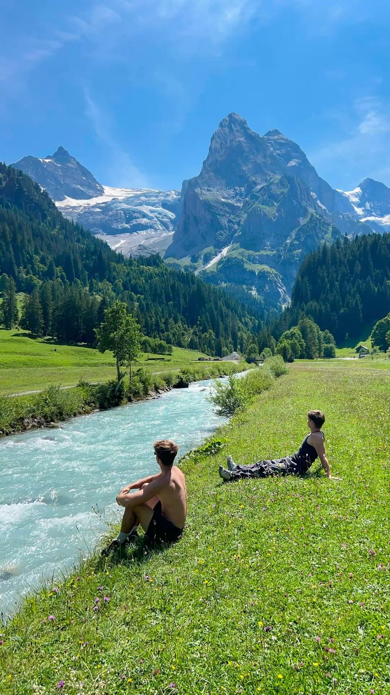
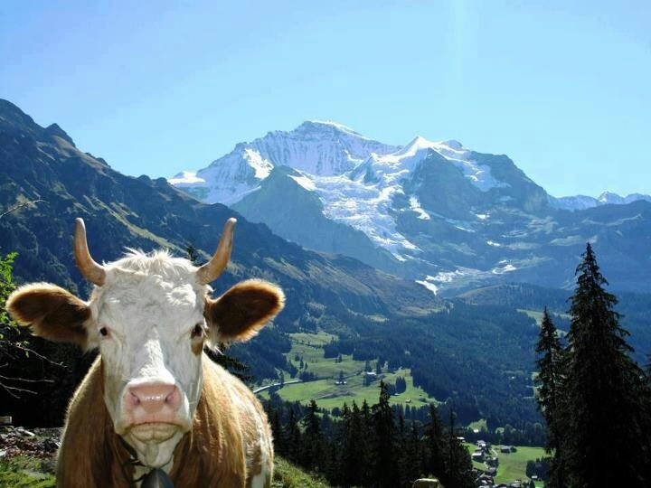
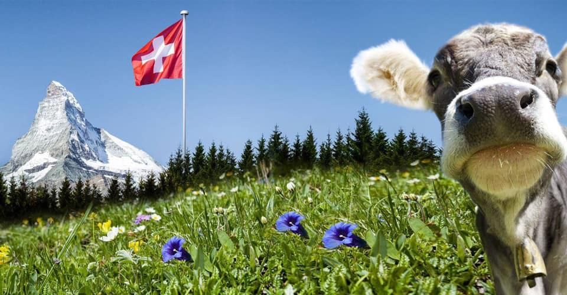
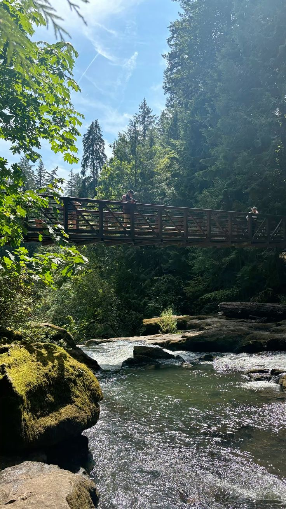
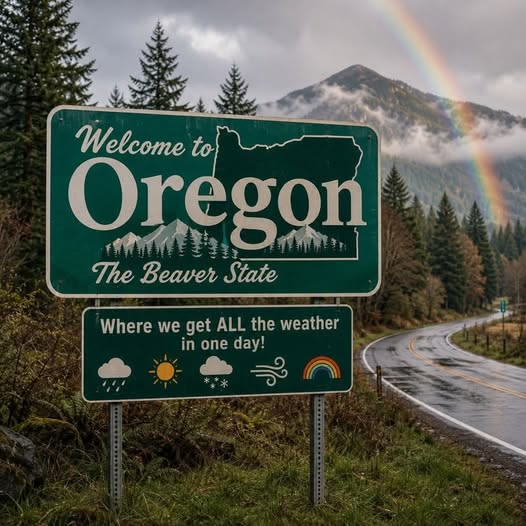
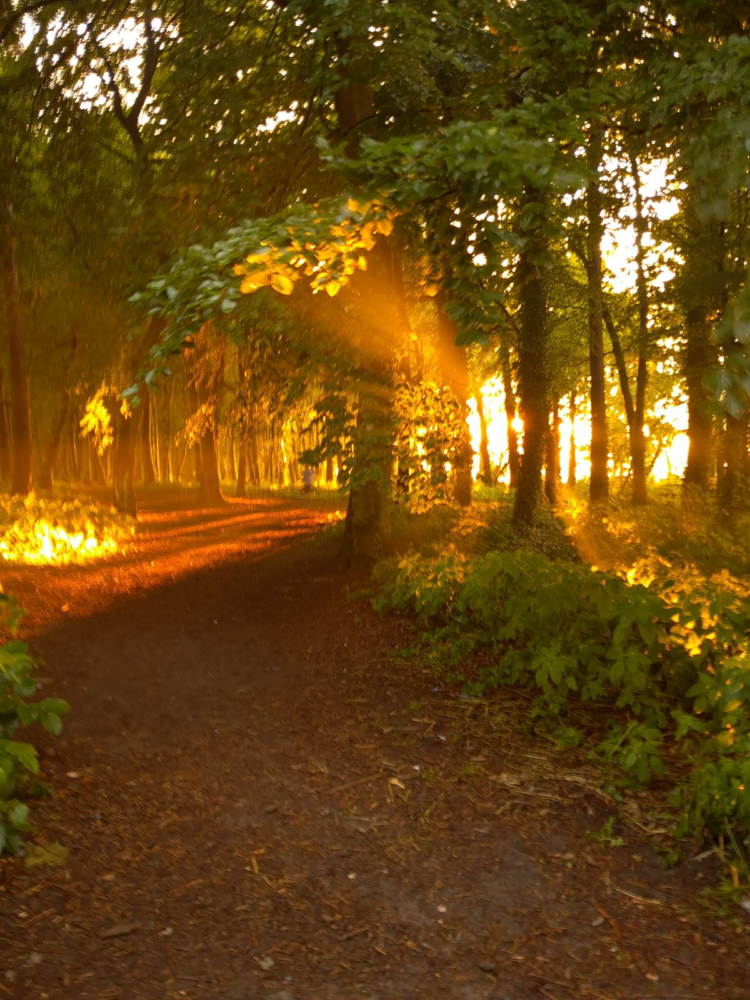

Suíça
Onde as montanhas tocam o silêncio.

Nos Alpes suíços, o gelo que nunca derrete por completo alimenta rios de um azul quase irreal. As montanhas — como o Wetterhorn e seus vizinhos — ficam de pé há milhões de anos, olhando vales verdes onde o tempo parece andar mais devagar. É um lugar de trilhas silenciosas, ar fino e paisagens que parecem pintadas.
Picos eternos, água de geleira e um verde que nunca cansa.


Oregon
Onde a natureza se encontra com o oceano.

O Oregon fica no noroeste dos Estados Unidos, entre o Oceano Pacífico e as Montanhas Cascade. É um estado de paisagens variadas — florestas úmidas, cachoeiras, vulcões e uma costa rochosa — com Portland como sua cidade mais conhecida, famosa pela cultura alternativa e pelos cafés artesanais.
Floresta, rios e uma costa que deslumbra como um quadro de pintura.

